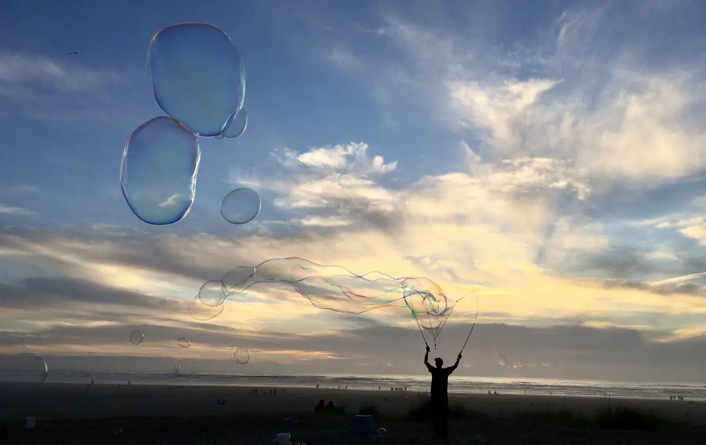
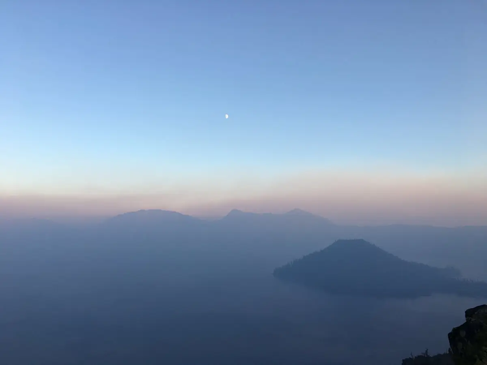

The interviews are complete
Four People, One Fast Loop Through the Northwest
The Northwest Hotlap began with a simple family idea: the four of us wanted to take a trip together.
Cassie’s mother selected the Oregon coast. Cassie and David had never traveled there, which made the choice easy to embrace. Cassie’s parents had watched us cross the country with Spencer during the Mighty V Passage, and they wanted an adventure of their own. The Utah trip had worked. We believed the same approach could work with two additional travelers, so we let them choose the region and said yes.
We flew to Seattle, rented a car, crossed toward Port Angeles by ferry, and built a fast loop through western Washington and Oregon. We visited Olympic National Park, followed U.S. 101 down the Washington and Oregon coasts as far as Coos Bay, turned inland toward the Willamette Valley and Crater Lake, then used the Interstate 5 corridor to reach Portland and return to Seattle. We ended with a couple of days in the city and visits connected to Mount Rainier and Mount St. Helens.
We did not call the trip the Northwest Hotlap at the time. That name arrived years later, when we began organizing our travels into Field Notes. It fits because the trip covered a great deal of landscape in a short loop, but the importance of the journey has little to do with its later branding.
This was the trip that proved the Mighty V Passage had not been a one-time success.
The Driving-Tour Model
The Utah journey had taught us that we could use our own efficient car, cover an extreme distance, and experience an exotic place without carrying a bedroom, kitchen, or bathroom. The Prius supplied movement and storage. Hotels, cabins, and Airbnbs supplied shelter. A cooler, simple meals, and restaurants handled food. We learned that the miles between destinations could become part of the trip rather than a price paid to reach it.
The Northwest Hotlap repeated the model with different variables. The Prius became a rental car. Spencer became two additional adult travelers. We were still in a vehicle we could not sleep in, so every night ended in a hotel, cabin, or Airbnb. The underlying system worked every bit as well.
David and Cassie’s mother handled most of the driving. Cassie and her father rode along, helped navigate, searched Google Maps, and found routes and places to stop. Four adults in one rental car could have created tension, but Cassie remembers the experience as simply fun.
The car gave us economical, flexible movement. Modest lodging gave us sleep and shelter. Together they allowed us to cover substantial mileage while treating the windshield as our primary way of experiencing the region. We began to recognize this as a complete form of travel: a driving tour.
That distinction matters in the larger story of Cassie and David. The Northwest Hotlap sits between the Mighty V Passage and Ivan Schenklemeier, our later minivan camper. Ivan did not replace the driving-tour model. He expanded it by bringing the overnight inside the vehicle.
Mist, Moss, and the Difference Between Woods and Forest
Olympic National Park gave us the atmosphere people hope to find in the Pacific Northwest. The weather was rainy without becoming a downpour—more mist than storm. Rather than spoiling the day, it made the forest feel cooler, greener, and more mysterious.

The Hall of Mosses became one of our favorite hikes. As David remembers it, we parked near a visitor center and walked a relatively flat loop of roughly a mile to a mile and a half. It was crowded, but the people did not erase the mood. Moisture hung in the air, and every inch of every tree seemed green.
Growing up in Kentucky, David frequently heard and used the phrase “the woods.” People went into the woods, camped in the woods, or drove through the woods. Olympic made him realize that he had never truly seen the forest.
The eastern woods he knew—in Kentucky, Ohio, Virginia, and Tennessee—were full of thorns, vines, brush, and bushes. They could contain beautiful trees, but good luck reaching them. Olympic seemed almost organized, planted, and tended even though it was wild. Matching trees extended across distances too large to absorb. David understood in the abstract that he was entering a temperate rainforest. He did not understand what that meant until the Hall of Mosses made every visible surface look alive.
Cassie and David also hiked toward a lake. The combination of water, mist, and forest helped define the Washington portion of the trip. The weather became part of the experience rather than something to escape. Olympic felt more like Olympic because it was damp.
The park remains unfinished business in the best way. After The Transcontinental Odyssey and Alaska, PourHouse should be near Seattle. David wants to return to Olympic with a more experienced set of eyes and see whether the forest feels different after everything we have visited since.
Hundreds of Miles Beside an Angry Ocean
The Washington and Oregon coasts transformed another landscape we thought we understood.
This was not David’s first view of the Pacific Ocean, but it was his first time driving beside it for hundreds of miles. Most of his earlier ocean experience had been on Florida’s west coast, looking at the Gulf of Mexico. Even when the Gulf becomes angry, it never looks like the Pacific did on this trip—even on one of the Pacific’s nicer days.
Everywhere we went, the ocean looked powerful. Waves rose, sprayed, and crashed into offshore rocks and dark formations. Cassie’s description was simpler: the ocean looked angry.

People surfed in wetsuits, but David never saw a place where he felt tempted to spread out a blanket and settle in for a conventional beach day. The coast was beautiful and compelling, but it felt cold, wild, and slightly dangerous rather than relaxing.
The route rewarded us for pulling over. Haystack Rock—the “Goonies rock”—was a definite favorite. We stopped at the Tree of Life, where exposed roots held a coastal tree above the earth. Viewpoint after viewpoint revealed enormous rocks and crashing water. We began laughing at how frequently coastal landmarks seemed to put the Devil in their names: a Devil’s Spit, Devil’s Cauldron, or something similar appeared again and again.

One cold beach day stands above the rest for Cassie. We ran around near the water and explored a rock formation with recesses and small arches we could duck into. She is confident it was not Haystack Rock. David remembers a place whose name may have sounded like Lover’s Beach, Lover’s Cove, or something similar. The photographs and location history should restore the name.

Another beach revealed an older landscape at low tide. Tree stumps remained visible where a forest had once stood, perhaps one of the coast’s so-called ghost forests.

The uncertainty around those names does not weaken the memory. What matters is already clear: it was cold, the ocean was gorgeous, and we were playing on the beach rather than merely observing it through a windshield.


Sunset Bubbles and the Value of Pulling Over
We stayed in a lively coastal town that Cassie remembers as possibly Seaside. Our lodging was in the center of things, close enough that the town and beach felt immediately accessible.
At sunset, a man was making enormous bubbles near the water. It was not a major attraction or a reserved activity. It was simply a beautiful evening with a playful public scene unfolding on the beach. We walked down to the water and joined the atmosphere.

That memory captures the Northwest Hotlap better than a strict itinerary could. The trip had major destinations, but some of its best scenes were ordinary moments encountered at the right time: mist in a forest, a roadside pullout, an exposed-root tree, a stranger making giant bubbles, or a rock formation nobody in the car could name years later.
This trip also sharpened how we found those moments. Cassie began searching Google while we were moving, identifying possibilities in real time. We had used maps for directions before, but the Northwest Hotlap helped us understand Google Maps as both a planning board and a discovery tool. A route did not have to be only a line between destinations. It could be surrounded by saved stars, oddities, viewpoints, restaurants, PourHouses, and possibilities.
Later trips would become more deliberate. We would mark promising stops before leaving and continue searching live from the passenger seat. The habit began to look like a travel system here.
PourHouse Before PourHouse Was a Van
In Washington, we stopped at businesses using the PourHouse name. Cassie especially remembers a brightly colored location where we sat outside. In Portland, we found another PourHouse that operated like a food truck, where we believe we stopped for beer.
PourHouse was also the name of our boat, so finding businesses with the same name had become a game and a reason to stop. Bars, taverns, coffee shops, wine shops, and other PourHouse-named businesses gave us a recurring thread that could follow us through otherwise unrelated places.
Years later, PourHouse would become the name of our Sprinter. On the Northwest Hotlap, it was still a private joke and a scavenger hunt—but it was already helping us turn travel into a connected story.
Willamette Without Reservations
When we turned inland, the Willamette Valley gave us another example of successful improvisation.
We visited two wineries without reservations. At one, we sat outside. At another, a family-owned operation, we took a small tour. We had not arrived with high expectations or a tightly planned wine itinerary. Both stops were fun precisely because we had happened upon them.
David had visited local wineries before, but they did not compare with what we encountered out West. At that point, he had not yet visited Sonoma County. Willamette was his first experience in a wine region where he could taste a bottle at the vineyard and later recognize or buy that same wine from a store shelf back home. The connection between a spontaneous travel stop and ordinary life after the trip felt remarkable.
The wineries reinforced something central to how Cassie and David would travel: preparation creates possibilities, but excessive scheduling can eliminate them. We needed enough structure to keep the loop moving and enough openness to walk into a winery we had not known existed that morning.
Crater Lake: Fog, Moonlight, and the Morning Reveal
Our nighttime approach to Crater Lake was frightening. The sun was setting, fog reduced visibility, and the road carried the kind of steep edge we were not accustomed to driving. Cassie’s mother had volunteered to drive that section. Her discomfort made the passengers uncomfortable too, although everyone arrived safely.
Cassie remembers the fog swallowing the lake so completely that we could not see it. David remembers reaching an overlook in the fading light, jumping out of the car, and catching a view of the lake by moonlight. Both memories belong in the story. The approach was frightening and visibility was poor, but we stopped when we could and caught a dark glimpse before the next morning transformed everything.

By morning, the fog had lifted. The view was super clear, and Crater Lake revealed itself. Cassie has a side-by-side photograph showing the two versions: the obscured arrival and the clear morning. One image is almost nothing. The other is the reason people make the drive.

Cassie and David also began a hike toward the shore. We did not reach the water, but we descended a substantial distance to an overlook. David remembers facing roughly an 800-foot climb back to the car. It was our first experience hiking that hard at altitude. He became so winded that he had to sit down.
That moment became an early warning rather than an isolated difficulty. During the later Great Western Loop, David again struggled to acclimate while sleeping at Taylor Park. The Crater Lake hike now reads as the first chapter in a longer lesson: Western elevation required different expectations, hydration, pacing, and preparation.
The Wrong Cabin
The Crater Lake lodging produced the trip’s funniest story—although it did not feel funny while it was happening.
We had to pick up keys before reaching a property with four rooms or cabins. Children were gathered around two of the rooms, while the doors to the other two stood open. We assumed the open rooms were ours, carried in our belongings, and then went for a walk.
When we returned, Cassie’s parents could not get into their room.
Cassie had placed them in the wrong one.
It was late, phone service did not work, and the situation became increasingly stressful. Then a Jeep arrived. Inside were two women whose room Cassie’s parents had occupied.
There was no dramatic confrontation. The women seemed understanding, everyone moved into the correct rooms, and the problem was resolved. Cassie felt terrible and embarrassed in the moment. In hindsight, the open doors, unusable phones, late-night confusion, and Jeep carrying the rightful guests became a family story worth keeping.
Portland Was Better Than Its Reputation
The individual Portland memories are real: a farmers market, abundant vegan food, a vegan doughnut shop, the PourHouse stop, and a hummus restaurant that Spencer was excited for us to try—possibly Aviv. For Cassie, the number of vegan choices mattered. Instead of searching for one workable option, she had an entire city of them.
David remembers something broader.
By the time we visited, we had already made several trips to San Francisco to see Spencer. In our Midwestern world, Portland carried a fairly terrible reputation: dirty, excessively liberal, and too far outside the mainstream. David also knew Seattle and Portland through the grunge-rock culture he had followed as a college student in the 1990s.
Portland was comparatively dirty, and its social problems were visible. It was also awesome.
The city had a pulse. Wherever we walked, it felt as though something fun, creative, artistic, or unconventional was happening nearby. Portland did not simply confirm or disprove a stereotype. It gave us a more complicated firsthand impression of a city whose identity felt present in the streets.
The vegan food, farmers market, doughnuts, hummus, and PourHouse supplied the scenes. The larger memory is that Portland overcame its reputation by being unmistakably alive.
Seattle, Rainier, and a Boyhood Friend’s Adult Life
Seattle served as both the beginning and end of the loop. During our final days, we explored the city in the way that had become typical for us: start with the famous places, then collect whatever small scenes made them feel real.
At Pike Place Market, we watched the fish being thrown a couple of times. We did not catch one ourselves, but seeing the ritual in person was part of the fun. Nearby, we walked through the gum-covered alley—strange, colorful, slightly disgusting, and exactly the kind of urban oddity we tend to remember.
We also spent time with David’s high-school friend Adam and his wife. Adam is a surgeon who built his practice and most of his adult life in Seattle. David had never visited him there. The reunion carried a quiet kind of wonder: someone tied to your boyhood can become an adult rooted in a completely different part of the country, and years later you can arrive and briefly see the life he built.
The mountain Cassie and David initially misremembered as McKinley was Mount Rainier. David first remembered seeing Rainier only at a distance through the windshield, but our photographs and location records corrected that memory: we entered Mount Rainier National Park on September 20, photographed Reflection Lakes, and drove Stevens Canyon Road.


Mount St. Helens was different. We drove to the visitor center and saw the blast field and the way the 1980 eruption had permanently changed the landscape.

For David, Mount St. Helens carried a childhood connection. His grandfather had traveled to Seattle for work and brought home a jar of black volcanic ash. The jar has been lost to time, but it made Mount St. Helens feel wild and exotic long before David visited. The eruption happened within his own memory. Finally seeing the volcano connected the landscape in front of him to a place that had occupied his imagination since boyhood.
What the Northwest Hotlap Proved
The trip was unquestionably worth it. Cassie remembers beautiful scenery, a great family experience, and fall weather that was chilly but manageable. Crowds were lighter than peak summer crowds, although Olympic’s popular areas could still feel busy. She would repeat the route and recommends Olympic National Park and Crater Lake without hesitation.
The Northwest Hotlap also confirmed how much we loved the Pacific Northwest. Before these early western trips, we did not think of ourselves as forest people, lake people, or mountain people. We knew those landscapes existed, but we had no real perception of their scale.
The Mighty V Passage had introduced us to the monumental interior West. The Northwest Hotlap added temperate rainforest, volcanic landscapes, wine country, and hundreds of miles of cold Pacific coastline. Together, the two trips showed us that our windshield could work as the front row of a driving tour—and that there were vistas beyond our experience we could not yet imagine.
That recognition created wanderlust.
David began researching vehicles as a hobby. At first, the question was simply how we might continue traveling farther and longer. A car paired with hotels and Airbnbs had proven successful twice. The next step was not obvious, but the possibilities were becoming clearer.
Ultimately, the Mighty V Passage and Northwest Hotlap led to the purchase of Ivan Schenklemeier and his transformation into a minivan RV. The Prius and rental car taught us how little we needed. Ivan would add a bed and allow us to carry the overnight with us. PourHouse would later add the bathroom, refrigeration, power, and four-wheel-drive capability required for even longer and more remote journeys.
The Northwest Hotlap did not involve sleeping in a vehicle. It did something more foundational. It confirmed that our style of travel could be repeated: use an efficient car, reserve lightly, mark possibilities, search as we go, pull over often, and let the road interrupt the plan.
We thought we were taking Cassie’s parents to see the Northwest.
We were proving that the road could become our way of life.